Experimentos de Mendel: primeira lei da herança
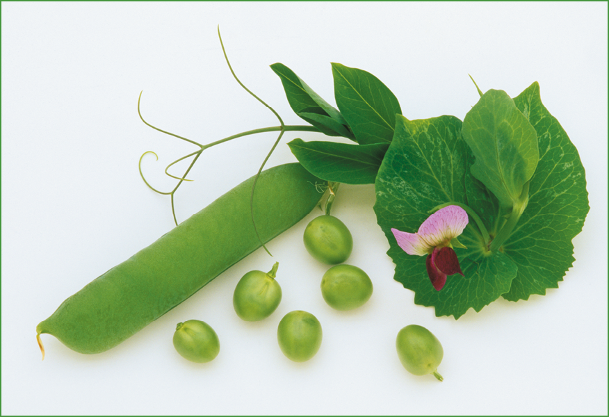
Planta de ervilha, organismo-modelo usado nos experimento de Gregor Mendel.
Wally Eberhart, Visuals Unlimited/Science Photo Library/Fotoarena
O trabalho de alguns pesquisadores causa grande impacto já na época de sua publicação, gerando intensos
debates. Esse foi o caso de Origem das espécies, de Charles Darwin.
No entanto, há vezes em que os resultados de uma pesquisa demoram a ser apreciados
com a devida importância.
Um exemplo disso é o trabalho de Gregor Mendel, um monge vindo de uma família humilde de camponeses. Durante
anos, ele se dedicou ao estudo de características de ervilhas nos jardins do Mosteiro Agostiniano de São
Tomás. Diferentemente de Darwin, o reconhecimento ao trabalho de Mendel demorou muito tempo e somente ocorreu
após pesquisadores independentes chegarem, anos depois, às mesmas conclusões e terem acesso à publicação
original.
Gregor Mendel não chegou a viver a sua glória, mas hoje é considerado o “pai da
Genética”. Após a sua morte,
os outros monges que viviam no mosteiro queimaram todas as anotações feitas acerca das ervilhas, dada a enorme
“heresia” praticada por Mendel.
- O que é herança monogênica?
- O que são organismos-modelo?
- Qual é a diferença entre proporção genotípica e proporção fenotípica?

Neste capítulo serão abordadas as habilidades
EM13CNT202,
EM13CNT205 e
EM13CNT301
A herança monogênica
Muitas características de um ser vivo são mais bem compreendidas quando se sabe quais
genes estão
relacionados a elas. Uma forma de obter essa informação é realizar sucessivas reproduções controladas, isto é,
cruzamentos entre os organismos de interesse para que, então, seja definido o padrão de herança.
A herança monogênica ocorre quando apenas um gene é responsável pela determinação de uma
característica. Esse
tipo de herança foi inicialmente elucidado em 1860 por Gregor Mendel e, ainda hoje, as regras por ele
estabelecidas são aplicadas em estudos genéticos. O sucesso de Mendel em muito é decorrente da metodologia
empregada na execução dos experimentos e na aplicação de testes estatísticos. Atualmente, os postulados
determinados pelo monge austríaco são chamados de leis de Mendel.
A escolha do organismo-modelo
Assim como em qualquer experimento, Mendel precisou escolher o organismo que seria
utilizado para testar suas hipóteses. Ele assegurou que esse organismo fosse de fácil manuseio, que produzisse
um grande número de descendentes e que tivesse um curto período de geração. O organismo-modelo eleito por
Mendel foi a planta de ervilha, da espécie Pisum sativum.
Além de todos os requisitos básicos para ser um organismo-teste, a espécie de planta
escolhida por Mendel apresentava outra vantagem: suas flores possuem um mecanismo natural que favorece a
autofecundação. Dessa forma, é possível controlar os cruzamentos, garantindo a obtenção de linhagens puras,
isto é, sem variação de características de uma geração a outra e que, em termos atuais, são referidas como
homozigotas.
Diferentemente do que se observa nos trabalhos atuais, a pesquisa desenvolvida por
Mendel não tinha como finalidade identificar as propriedades apresentadas pelas ervilhas; ele buscava
compreender como as características eram herdadas de geração em geração.
Para isso, o monge e botânico se debruçou sobre sete características de seu
organismo-modelo: a cor e a forma da ervilha, a cor e a forma da vagem, a cor da flor, a altura da planta e a
posição do broto na planta. Para todas essas características, Mendel obteve duas linhagens contrastantes, sem
que houvesse organismos com características intermediárias.
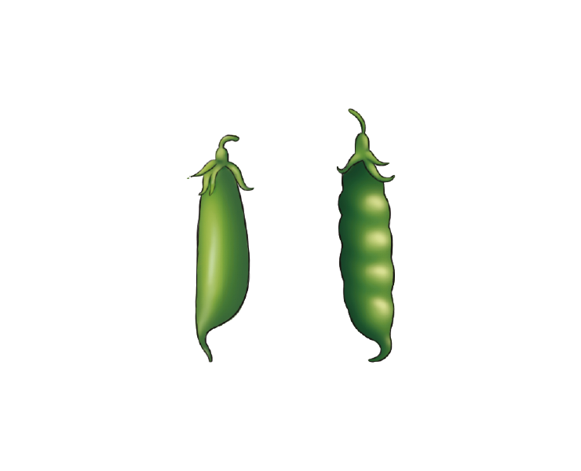
Vagens maduras infladas ou murchas
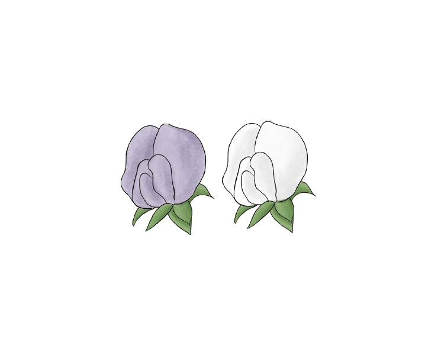
Pétalas Roxas ou Brancas.
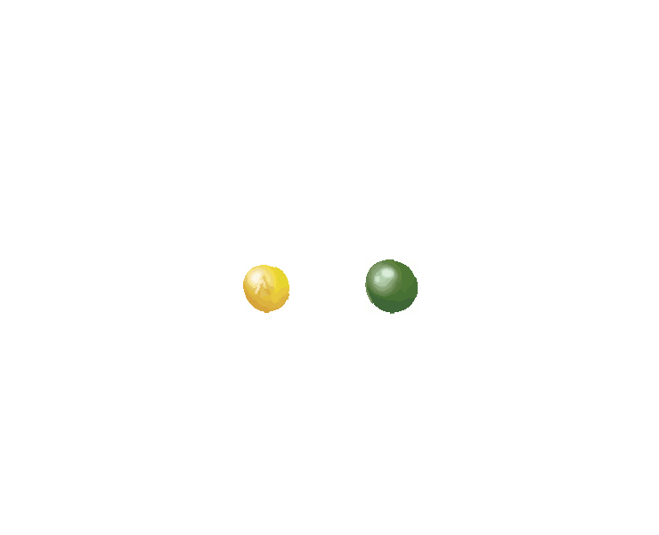
Sementes amarelas ou verdes.
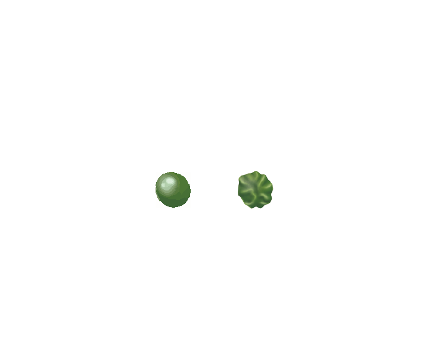
Sementes maduras lisas ou rugosas.
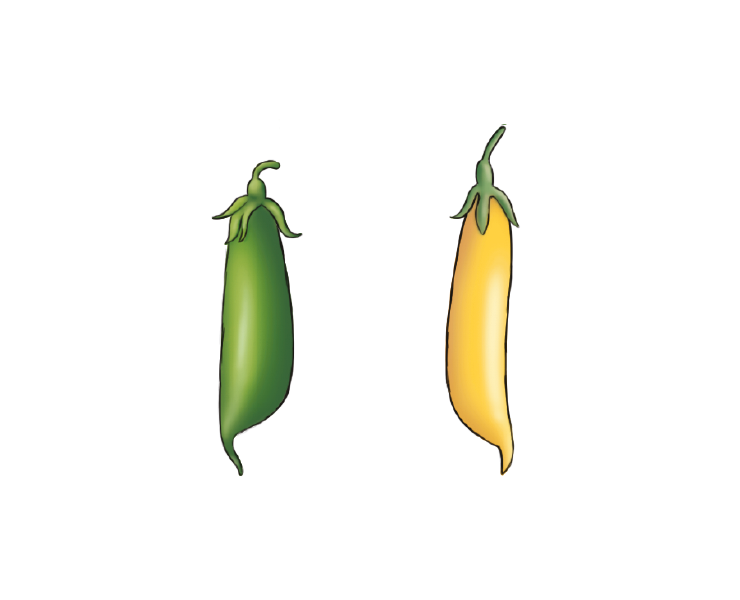
Vagens maduras infladas ou murchas
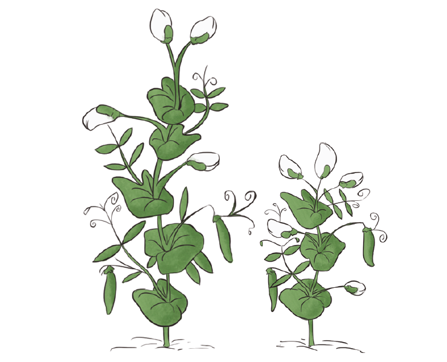
Pétalas Roxas ou Brancas.
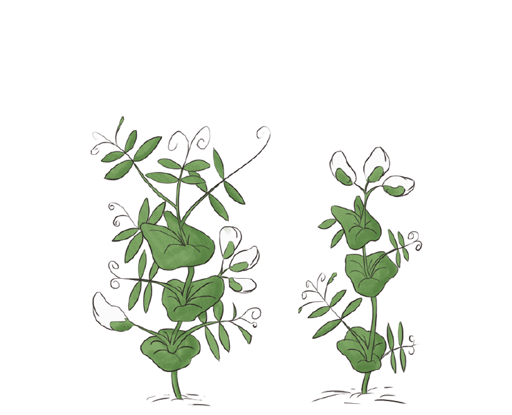
Sementes amarelas ou verdes.
GRIFFITHS, A. J. F. et al.
Introdução à Genética. 10. ed. Rio de Janeiro: Guanabara Koogan, 2013.
Variedades fenotípicas das ervilhas escolhidas por Mendel.
Metodologia de Mendel
Todas as linhagens utilizadas inicialmente por Mendel eram linhagens puras, obtidas e
mantidas por autofecundação. Contudo, para prosseguir com seus testes, foi necessário evitar essa forma de
reprodução e garantir a ocorrência de fecundação cruzada, ou seja, o encontro de gametas provenientes de
diferentes genitores.
Para isso, Mendel retirou os
estames
de algumas flores das linhagens que ele iria cruzar, antes mesmo de essas estruturas estarem maduras. Em
seguida, ele próprio polinizava as flores sem estames, transferindo grãos de pólen retirados de outra
linhagem. Dessa forma, Mendel tinha total controle sobre os indivíduos que participavam do cruzamento e que
compunham a geração parental, ou geração P.
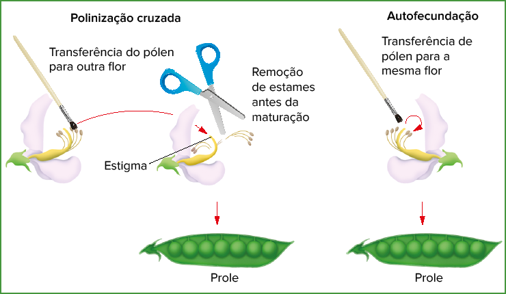
Comparação entre os processos de polinização cruzada e de autofecundação realizados por
Mendel.
Emre Terim/Shutterstock.com
Desse primeiro cruzamento feito a partir da geração parental, obtinham-se os
descendentes que compunham a primeira geração de filhos, ou
geração F1. O processo de reprodução das plantas da geração F1 originava sementes que representavam a
segunda geração de
filhos, ou geração F2.
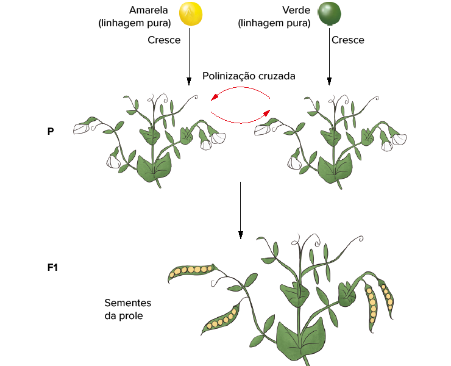
Resultado obtido a partir da fecundação cruzada entre linhagens puras amarela e verde.
GRIFFITHS, A. J. F. et al.
Introdução à Genética
. 10. ed. Rio de Janeiro: Guanabara Koogan, 2013.
Para compreender esse método utilizado por Mendel, vamos primeiramente tomar como
exemplo a cor das ervilhas (amarela ou verde). Na geração P, a polinização é feita de maneira cruzada entre
plantas de duas linhagens puras: uma que se desenvolveu a partir de sementes verdes e outra originada de
sementes amarelas. Desse cruzamento, todas as sementes que compõem a geração F1 são amarelas.
Diante desse resultado, uma nova pergunta precisava ser respondida: o que teria
acontecido com a característica parental verde que, em F1, havia sumido? A fim de responder a esse
questionamento, Mendel cultivou as ervilhas amarelas produzidas em F1 e, posteriormente, realizou a
autofecundação dessas plantas para, então, analisar a geração F2 resultante.
Em F2, Mendel notou o reaparecimento da característica verde em
parte das ervilhas. Dessa forma, ele deduziu que, apesar de a característica estar ausente na geração F1,
ela não havia sido perdida, o que possibilitava o reaparecimento na geração F2. Mendel então adotou o termo
recessivo para o caráter que desaparecia em F1 e o termo dominante
para aquele que predominava e estava presente em F1. Ou seja, em
nosso exemplo, a característica cor amarela da ervilha é dominante
em relação à cor verde, que representa, então, um caráter recessivo.
Após a autofecundação das plantas de ervilhas amarelas de F1, obtidas a partir do cruzamento parental,
Mendel percebeu que a quantidade
de ervilhas amarelas e verdes em F2 se aproximava da proporção 3/4
(75%) de ervilhas amarelas para 1/4 (25%) de ervilhas verdes.
Mendel ainda entrecruzou as plantas geradas a partir das sementes
de F2. Com isso, notou que plantas com ervilhas verdes, quando cruzadas entres si, geravam apenas novas
plantas com ervilhas verdes; e que
quando as plantas com ervilhas amarelas eram cruzadas entre si, dois resultados podiam aparecer. Alguns
cruzamentos geravam apenas ervilhas
amarelas, outros produziam a mesma proporção de ervilhas amarelas e
verdes observada na geração F2.
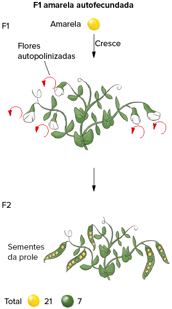
Resultado obtido a partir da autofecundação da geração F1.
GRIFFITHS, A. J. F. et al.
Introdução à Genética
. 10. ed. Rio de Janeiro: Guanabara Koogan, 2013.
Utilizando esse método para todas as sete características de interesse,
Mendel sempre teve como resultado, na geração F2, a proporção de 3:1,
conforme se verifica na tabela abaixo
Para explicar seus resultados, Mendel propôs que, para cada característica, existiria um par de fatores que
a determinava. Hoje sabemos que
esses fatores são conhecidos como genes e que suas variáveis são os
alelos. Para facilitar a compreensão do processo, pode-se escolher uma
letra do alfabeto ou uma sigla para representar o gene.
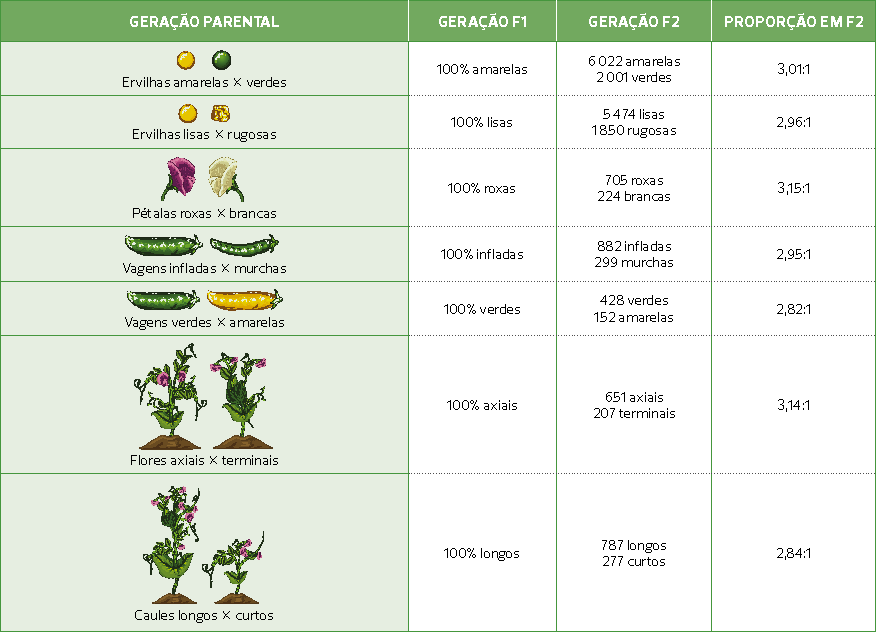
N.Vinoth Narasingam/Shutterstock.com
Por exemplo, podemos nomear como V o gene que determina a cor da ervilha, e esse gene
apresenta o alelo dominante V, responsável pela cor amarela, e o alelo recessivo v, responsável pela cor
verde.
Apesar de não ter conhecimento sobre o fenômeno biológico que produzia os gametas – a meiose –,Mendel assumiu
que, em cada célula gamética, haveria apenas uma das variáveis do fator em questão – ou seja, um alelo do gene
– e, por essa razão, a
primeira lei de Mendel
é também conhecida como
lei da herança
, ou
lei da segregação igual
.
A meiose e a primeira lei de Mendel
Sabemos que os genes fazem parte das moléculas de DNA que, por sua vez, compõem os cromossomos presentes no
núcleo de uma célula. Em células diploides, os cromossomos estão presentes aos pares, que apresentam o mesmo
tamanho, o mesmo formato e a mesma posição do centrômero e, por isso, são chamados de cromossomos homólogos.
Neles, os genes presentes também são os mesmos, podendo ou não haver alelos diferentes.
Quando as células passam por meiose, os cromossomos homólogos se separam e passam a
compor as células-filhas haploides. Vamos tomar como exemplo os gametas produzidos pela geração parental de
ervilhas estudadas por Mendel.
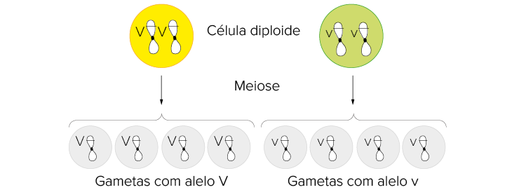
Representação dos gametas produzidos pela geração parental
após a meiose, considerando a característica cor da ervilha.
A geração parental é composta por organismos de linhagens puras, ditos homozigotos, para
determinada
característica. Esses organismos produzem apenas um tipo de gameta considerando essa característica, porque os
cromossomos homólogos possuem o mesmo alelo. As plantas parentais de ervilhas amarelas, cujo genótipo é VV,
produzirão apenas gametas com o alelo V,enquanto as plantas de ervilhas verde, cujo genótipo é vv, produzirão
apenas gametas com o alelo v.
Sabemos que os gametas, então, fundem-se e dão origem a uma nova célula diploide
conhecida como zigoto, a
qual originará todo um novo indivíduo. No experimento de Mendel, tem-se, então, a formação de F1, cujo
genótipo é Vv. Uma vez que os alelos são diferentes, esses indivíduos são conhecidos como heterozigotos ou
híbridos. Agora, cada um desses indivíduos da F1 é capaz de produzir gametas com o alelo V ou com o alelo v.
Quando autofecundados, é possível ocorrer diferentes combinações entre esses alelos.
O encontro dos gametas produzidos por F1 ocorre ao acaso e as possibilidades de
combinações a serem obtidas
na geração F2 podem ser esquematizadas no quadro de Punnett. Assim, é possível identificar a proporção obtida
nos resultados de Mendel em F2: 3/4 de ervilhas amarelas e 1/4 de ervilhas verdes.
Representação dos gametas produzidos pela geração F1 após a meiose, considerando a
característica cor da ervilha.
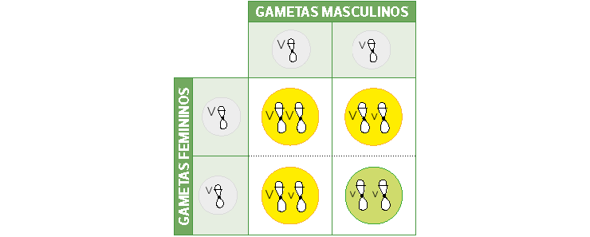
Representação do quadro de Punnett do cruzamento entre indivíduos de genótipo
heterozigoto.
Cruzamento-teste e retrocruzamento
Em seus experimentos, além da autofecundação de F1, Mendel também promoveu o cruzamento entre os indivíduos
dessa prole com plantas de ervilhas verdes. Esse cruzamento realizado por ele consiste no que hoje chamamos de
cruzamento-teste
, útil para a identificação do genótipo de um indivíduo que manifeste o caráter dominante.
Para realizar o cruzamento-teste, é necessário que o indivíduo cujo genótipo se queira conhecer seja cruzado
com um indivíduo que manifeste o caráter recessivo para a característica em questão.
Por exemplo: uma planta de ervilha amarela pode ter genótipo homozigoto dominante (VV) ou heterozigoto (Vv).
Após cruzá-la com uma planta de ervilha verde (vv), analisa-se a prole: se nenhum dos descendentes manifestar
o caráter recessivo, então a planta parental com ervilhas amarelas é homozigota. Mas se 50% dos descendentes
manifestarem o caráter recessivo verde, pode-se concluir que a planta parental com ervilhas amarelas é
heterozigota.
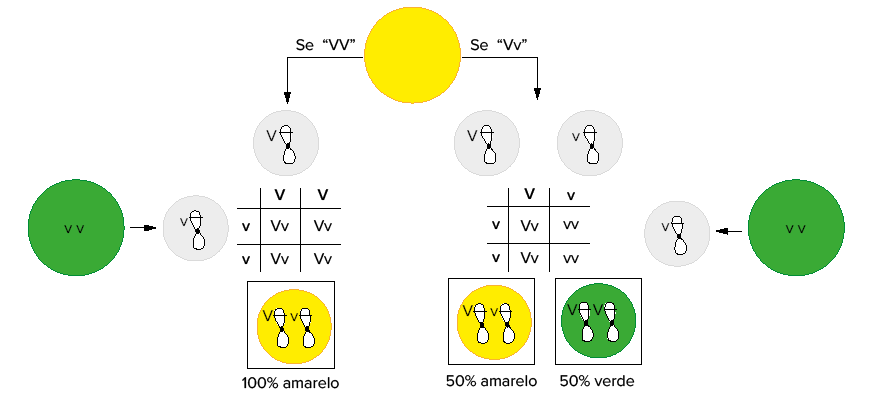
Representação de um cruzamento-teste indicando os gametas (em cinza) e as proporções da prole.
Quando os indivíduos de F1 são cruzados com os indivíduos da geração parental ou com
outros indivíduos cujo genótipo seja idêntico ao de
um dos genitores, dá-se o nome de retrocruzamento (do latim retro, que
significa “atrás”).
A escolha do organismo-modelo
Mendel se destacava muito por suas habilidades em Física e Matemática e acreditava que, se a segunda podia
explicar fenômenos da primeira, ela também poderia ser usada para compreender a Biologia.
Diante dos resultados que seus experimentos com ervilhas vinham
fornecendo, Mendel foi capaz de aplicar conceitos de Estatística em seu
trabalho, como a Probabilidade, abordada no capítulo anterior. Ao relacionar o princípio da probabilidade com
o
evento da segregação que
aconteceria entre os fatores que determinavam dado caráter, no caso, a
cor da ervilha, ele pôde concluir as relações entre os números que havia
encontrado.
Na geração parental, ambos os indivíduos eram homozigotos, sendo
as ervilhas amarelas homozigotos dominantes (VV) e as ervilhas verdes
homozigotos recessivos (vv). Dessa forma, durante a meiose, os gametas
produzidos pelas plantas de ervilhas amarelas seriam 100% gametas V,
enquanto os gametas das plantas de ervilhas verdes seriam 100% gametas v. Consequentemente, do cruzamento
entre
esses dois tipos de
planta haveria somente uma possibilidade de resultado, que, matematicamente, pode ser explicado com base na
multiplicação entre as probabilidades de cada gameta.
- Probabilidade (gameta V) = 100% = 1
- Probabilidade (gameta v) = 100% = 1
- • Probabilidade (combinação Vv) = probabilidade (gameta V) x probabilidade (gameta v)
= 1 3 1 = 1 = 100%
Esses dados corroboram os achados de Mendel para a geração F1,
na qual os indivíduos produzidos eram todos heterozigotos (Vv), sendo
capazes, cada um, de produzir 50% de gametas V e 50% de gametas v,
seguindo os princípios da meiose. Logo, a probabilidade de um gameta V
ser formado é de 1/2 e de um gameta v ser gerado também é 1/2.
Ao considerarmos esses valores no quadro de Punnett, a mesma
regra de multiplicação aplicada anteriormente deve ser seguida para o
encontro ao acaso dos gametas femininos e masculinos produzidos por
plantas heterozigotas.
Representação do quadro de Punnett
considerando a composição alélica dos
gametas produzidos por F1.